OCHO LUGARES / UN RELATO ABIERTO
Hay ciudades
que permanecen.
Acércate. La historia empieza
en la forma de mirar.

I / EL UMBRAL
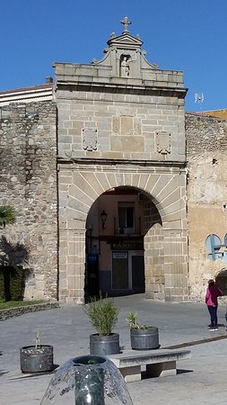
hay que
entrar.
La sombra del arco.
La luz al otro lado.
Un instante entre dos lugares.
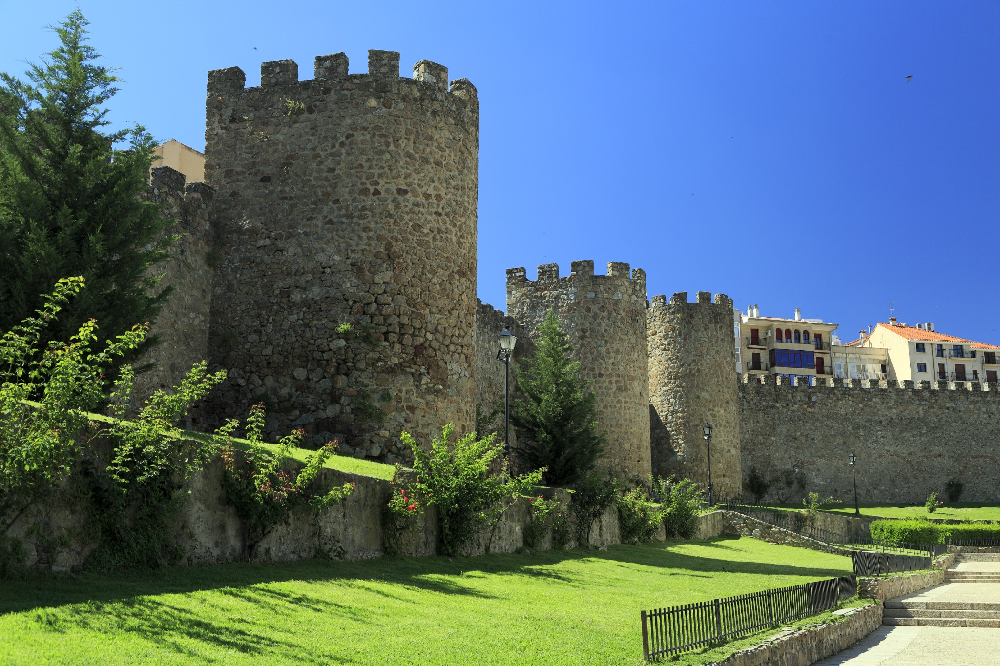
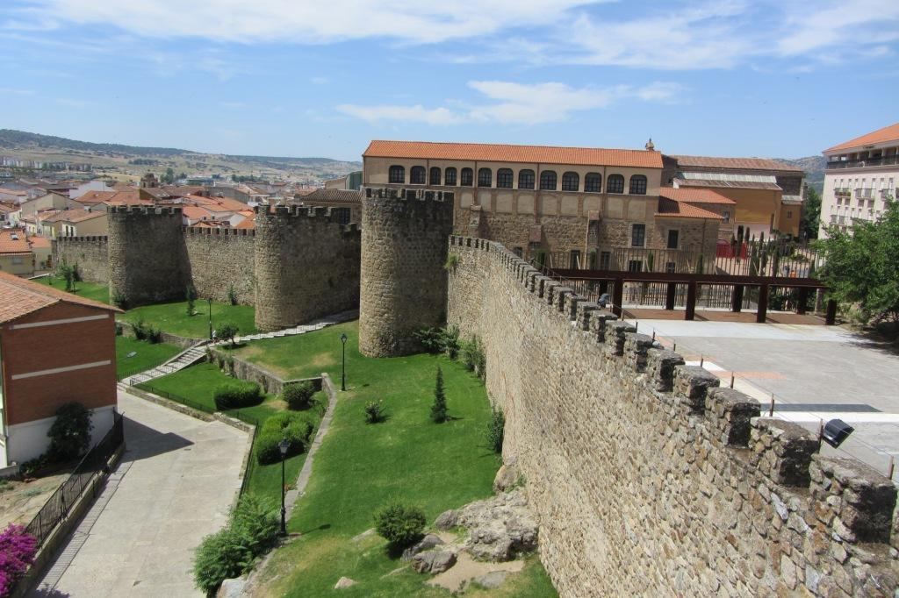
II / LO QUE NOS RODEA
La piedra
no olvida.
Una línea
que protege.
Una textura
que recuerda.
Una ciudad
que continúa.
III / EL ARTE DE ENCONTRARSE
La vida sucede
entre balcones.
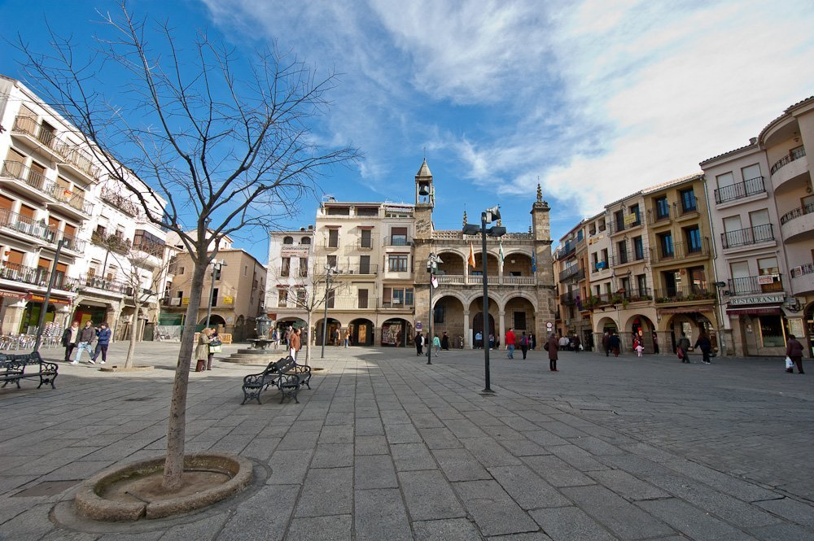
El recorrido se abre.
Una conversación.
Una espera.
Una plaza compartida.
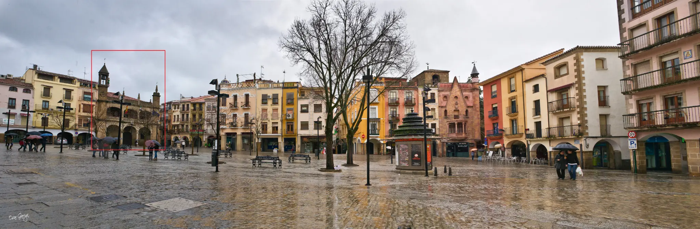
IV / EL TIEMPO TIENE ROSTRO
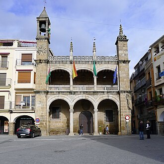
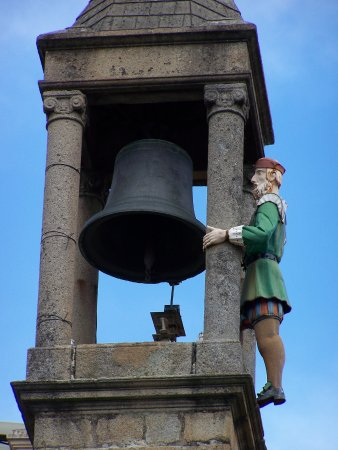
Mira
hacia arriba.
El conjunto presenta la ciudad.
El detalle la vuelve familiar.
V / OTRA FORMA DE HABITAR EL TIEMPO
Aquí,
respira.
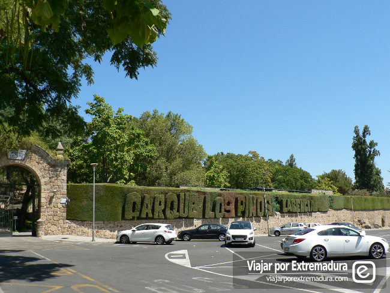
La luz se queda
un poco más.
Entre la entrada, los setos y los pinos,
el paseo encuentra su propia pausa.
VI / PIEDRA HACIA EL CIELO
¿Hasta dónde
puede llegar
la luz?
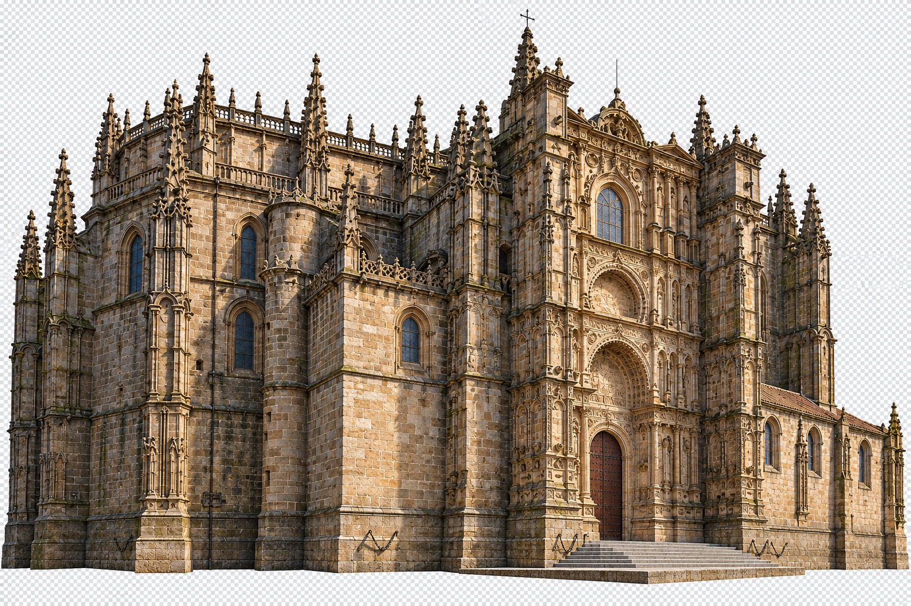
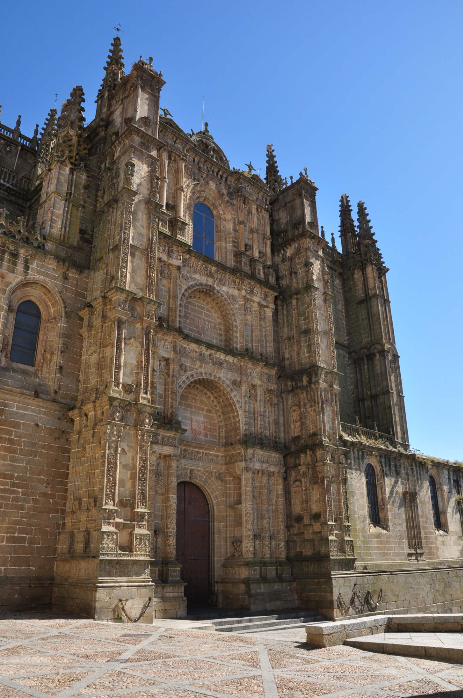
Primero, el asombro.
Después, un detalle.
VII / LA FORMA DEL HORIZONTE
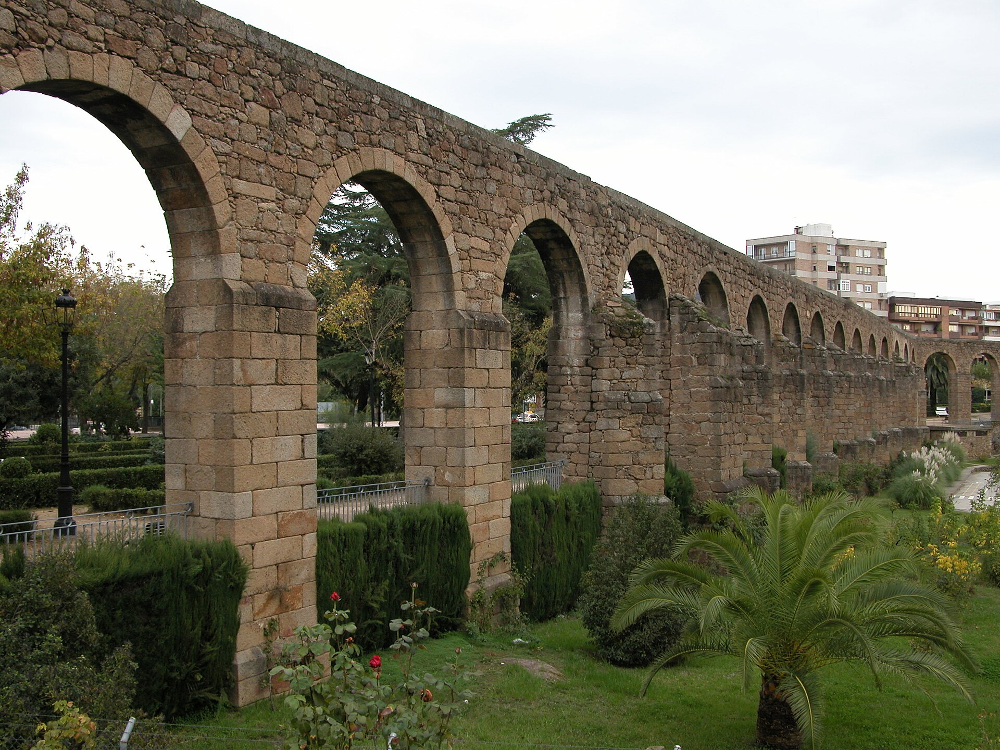
Entre un arco y el siguiente,
el vacío también construye.
VIII / LO QUE QUEDA
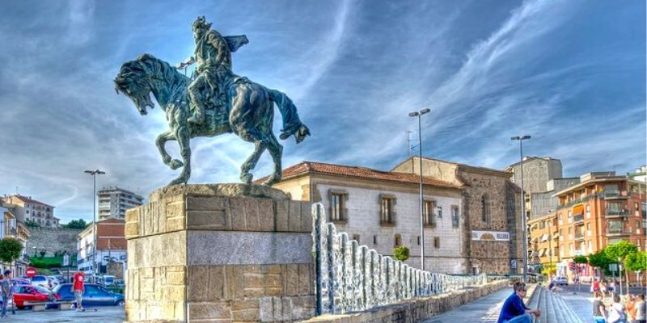
Todo cambia.
Algo permanece.
La figura, la piedra, el agua.
Dos maneras de habitar el tiempo:
permanecer y seguir.
Ahora, la historia
continúa contigo.